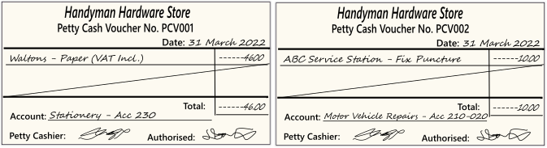
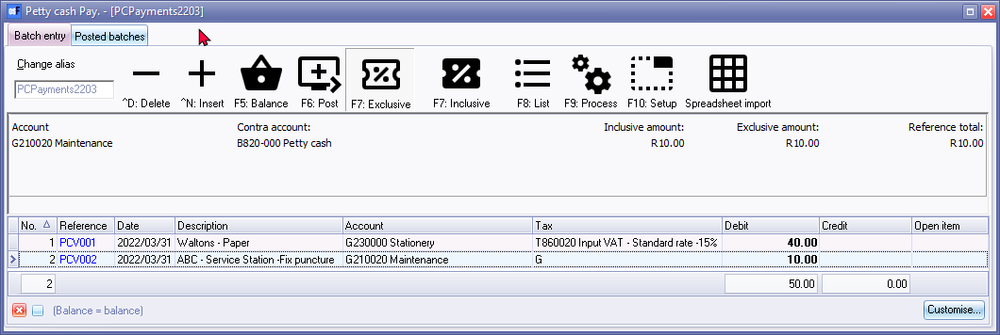
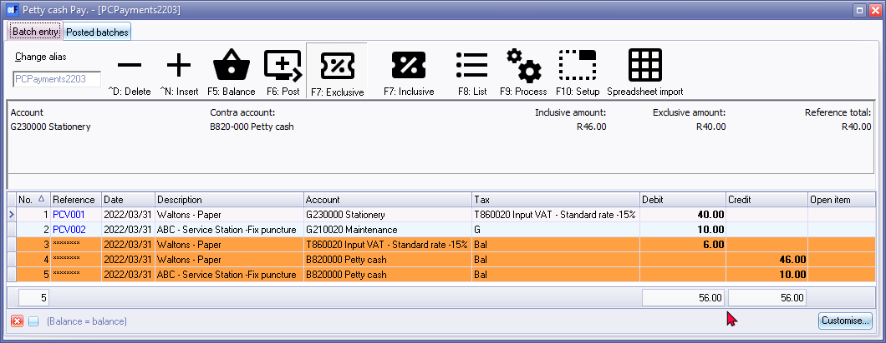
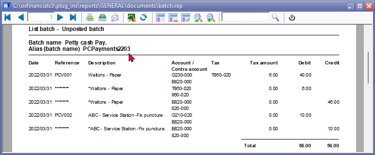
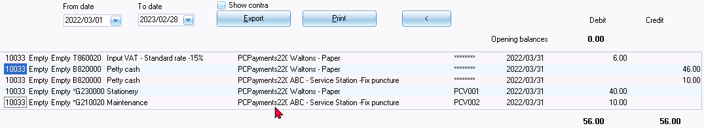
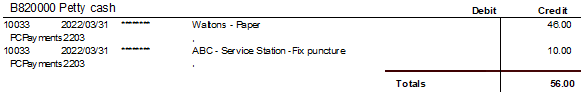
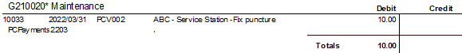
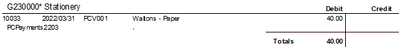
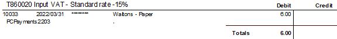

Petty cash transactions
What is petty cash?
Petty cash is a small amount of cash that is kept on hand by a business or organization to cover small, incidental expenses.
This fund is typically used for expenses such as office supplies, postage, taxi fares, or other small purchases that do not warrant the use of a company credit card or a check.
The amount of petty cash maintained by a business may vary depending on the size and nature of the organization. Typically, petty cash is held in a secure location and is managed by a designated employee, such as an administrative assistant or office manager.
To ensure that the petty cash fund remains balanced and that all transactions are properly accounted for, a petty cash book or ledger is maintained. This book is used to record all transactions made from the petty cash fund, including the date, amount, purpose, and recipient of each expenditure.
At regular intervals, such as at the end of each month or quarter, the petty cash fund is reconciled to ensure that the balance of the fund matches the total of the transactions recorded in the petty cash book.
Source documents
The source documents used to enter transactions in petty cash are typically receipts, invoices, and other documents that provide evidence of the transaction.
For example, if a small amount of cash is used to purchase office supplies, a receipt would be obtained and used as the source document to record the transaction in the petty cash book.
Other types of transactions that may be recorded in a petty cash book could include reimbursements for small expenses such as transportation costs, office snacks or coffee, and other incidental expenses.
In order to maintain accurate records of petty cash transactions, it's important to ensure that all source documents are properly dated and contain the necessary details, such as the amount spent, the purpose of the expenditure, and the names of any individuals involved in the transaction. This will help to ensure that all transactions are properly accounted for and can be easily reconciled with the petty cash book.
|
|
Petty cash vouchers A petty cash voucher is a small form or document that is used to record transactions for small, incidental expenses paid from a petty cash fund. The voucher typically contains information such as the date of the transaction, the amount of the expense, the purpose of the expenditure, the name of the payee or recipient, and the signature of the person authorizing the expense. Petty cash vouchers are important because they provide a record of all transactions made from the petty cash fund, which helps to ensure that all expenditures are properly accounted for and that the fund remains balanced. The voucher is usually submitted along with the original receipt or other source document as evidence of the transaction. It is then used to record the transaction in the petty cash book or ledger, which is used to track all transactions made from the petty cash fund. |

|
|
Petty cash payments should be used as a bank account. If it is used as a normal General ledger – Balance sheet Account, it could cause problems on the Tax Reports (Input VAT/GST/Sales Tax). |

|
|
You may also reconcile your Petty cash payments and Receipt batches. |
For the purposes of this tutorial, we assume that you have paid the following expenses from your petty cash:

Petty cash transactions
|
|
This procedure describes the process to record Petty cash transactions if the Bank import plugin is not activated. If the Bank import plugin, is activated, please read the following: |

|
|
Bank import plugin - Bank Reconciliations Plugin Manual - BankImport Plugin Manual - Shop -The Bank import plugin is included in the osFinancials5 subscription. The Bankimport plugin will import bank transactions and save you hours of data entry. You can simply link transactions to your debtors, creditors or other accounts. And with a simple mouse click link the payments to the right invoices. Needs to be activated on the Setup ribbon, select Setup → System parameters. |

In addition to bank accounts, petty cash accounts, is the only source where money can physically flow into and out of the business. The bank account should be strictly monitored to ensure that all the monies that are received are deposited, and that all the payments and/or cheques have been honoured.
Select and Open the Petty cash journal
To enter your Petty cash payment transactions:
- On the Default ribbon, select Batch entry (F2).
- Select the Petty cash Jnl and click on the Open button. The Petty cash journal screen will be displayed.
- Enter the Alias (batch name) in the "Change alias" field on the Topbar of the Batch entry screen. In this example we enter ''PettyCash2303'' to indicate that the Petty cash payments for March 2022 was entered in this Petty cash payments journal.
|
|
The alias option allows you to identify a batch by a unique name. You will be able to select the batch by alias or batch name if you need to reverse the posted batch or import a posted batch. |

- Click on the F10:Setup icon to set the Options for the batch, if necessary.

|
|
If you need to enter transactions with Tax accounts, you need to check that the Consolidate balancing field is not selected (not ticked) on the Standard tab of the F10:Setup (Options for this batch screen). |
- Select the General ledger option for the Account lookup type, since you do not need to select Debtor or Creditor accounts when you enter transactions for petty cash payments.
- Once set up; click on the OK button. You are now ready to capture your first petty cash voucher.
|
|
Ref. No. |
Date |
Description |
Account |
Tax |
Amount |
|
|
PCV001 |
2016/03/31 |
Paper - Waltons |
Stationery |
Input VAT/GST/ Sales Tax |
57.00 |
|
|
PCV002 |
2016/03/31 |
Fix Puncture ABC Service Station |
Maintenance |
No Tax |
10.00 |
- Capture your petty cash vouchers from your petty cash voucher book or from your requisitions. Use your petty cash voucher number as the reference number.
- Reference: PCV001
- Date: 2016/03/31
- Description: Waltons Paper
- Account: Type 720 or Petty cash and select the correct Petty cash account.
- Contra account: Type 230 or Stationery to select the correct account, for this payment.
- Tax: Input VAT/GST/Sales Tax - Standard Goods.
- Amount: 57.00 CR Ensure that the F7:Inclusive icon is reflecting "inclusive". This should be so as we set the batch to the inclusive mode.
- You are now ready to enter your next petty cash voucher no. PCV002.
- Reference: PCV002
- Date: 2016/03/31
- Description: ABC Service Centre - Fix Puncture
- Account: Type 720 or Petty cash and select the correct Petty cash account.
- Contra account: Type 210020 or Maintenance to select the correct account, for this payment.
- Tax: No Tax
- Amount: 10.00 CR
- After capturing all your petty cash vouchers, the Petty cash journal is displayed as follows:
|
|
“F7: Inclusive” icon - Amounts in the bold font indicate that it is entered Inclusive of VAT/GST/Sales Tax. If the “F7: Exclusive” icon is displayed, the amounts are entered as Exclusive if VAT/GST/Sales Tax and will be displayed in the normal or regular font. |

|
|
When you enter a transaction and the cursor is in the -
|
Posting the Petty cash batch
Once you have completed entering these petty cash payments, and you are sure they are correct, you may proceed to finalise the batch. The recommended process, is as follows:
- Click on the F5:Balance icon. osFinancials will generate balancing entries to the selected contra accounts and the “Input VAT/GST/Sales Tax - Standard Rate” and the “Petty cash” accounts.

|
|
The Balancing Entries will automatically be generated for each transaction to the Contra account (e.g. Petty cash account) and the Input Tax (VAT/GST/Sales Tax) accounts. |
|
|
If the description is displayed as "BALANCING ENTRY Pay.PettyCash", the Tax reports may not include these transactions correctly. This implies that the Consolidate balancing field is ticked on the Standard tab of the F10:Setup (Options for this batch screen). You need to deselect (remove the tick) of the Consolidate balancing field on the Standard tab of the F10:Setup (Options for this batch screen) and rebalance the batch. |
- Click on the F8:List icon to print a list of the transactions in the batch.

|
|
It is recommended that the source documents (e.g. petty cash vouchers and/or invoices, slips, etc. received from suppliers, etc.) be attached to this List of the transactions and that it be retained for record and audit purposes. |
- Click on the F6:Post icon, to post (update) the batch to the ledger.
T-Account view of transactions
All processed (posted) transactions will be accumulated in the Ledger analyser. There are various ways in which the transactions may be viewed, exported and analysed.
To access the T-Account view of the Transactions, do the following:
- Click on the T-Account Analyser (on the Sidebar (Quick menu); or on the Tools menu).
- Select an Account (e.g. B820-000 Petty cash) and double-click on it.
- Click on the following to get specific views of transactions:
- Batch number (e.g. 10033 generated by osFinancials). This will list only the transactions for a specific batch (journal).
- Account code (e.g. B820-000 Petty cash, G210-020 Maintenance G230-000 Stationery, 860-020 Input VAT Standard). This will list the transactions for a specific account.
- Date – This will list the transactions for a specific date. If you double-click on a date, the From date and To date will be changed to the selected date.
After posting the transactions in the Petty cash payments journal, the transactions should display as follows in the T-Account viewer:
Batch View

Account View




Accounting equation |